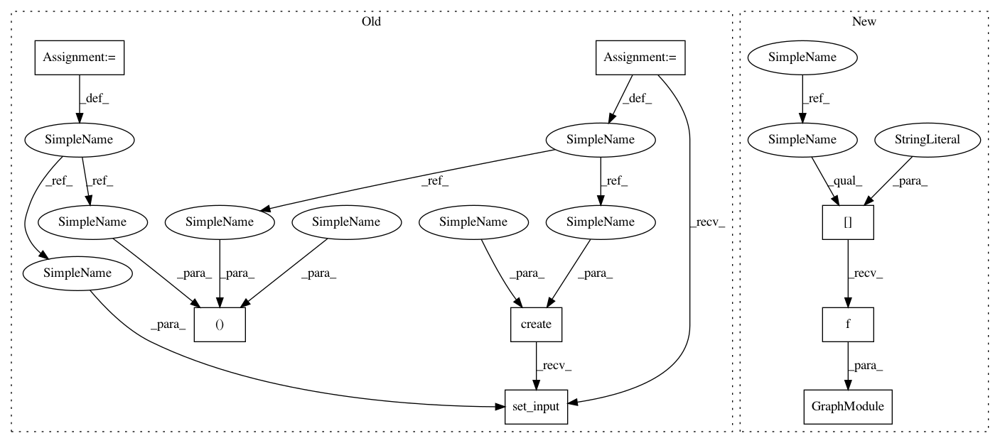

6b5694f0f2941fb9e8fa510011e3caeb03056b4e,tests/python/relay/test_simplify_fc_transpose.py,,run_func,#Any#Any#Any#,30
Before Change
def run_func(func, params, x):
with tvm.transform.PassContext(opt_level=3):
graph, lib, new_params = relay.build(func, "llvm", params=params)
from tvm.contrib import graph_runtime
ctx = tvm.cpu(0)
dtype = "float32"
m = graph_runtime.create(graph, lib, ctx)
// set inputs
m.set_input("data", tvm.nd.array(x.astype(dtype)))
m.set_input(**new_params)
// execute
m.run()
// get outputs
tvm_output = m.get_output(0)
After Change
ctx = tvm.cpu(0)
dtype = "float32"
m = graph_runtime.GraphModule(lib["default"](ctx))
// set inputs
m.set_input("data", tvm.nd.array(x.astype(dtype)))
// execute
m.run()
In pattern: SUPERPATTERN
Frequency: 6
Non-data size: 8
Instances
Project Name: apache/incubator-tvm
Commit Name: 6b5694f0f2941fb9e8fa510011e3caeb03056b4e
Time: 2020-09-16
Author: tqchen@users.noreply.github.com
File Name: tests/python/relay/test_simplify_fc_transpose.py
Class Name:
Method Name: run_func
Project Name: apache/incubator-tvm
Commit Name: 6b5694f0f2941fb9e8fa510011e3caeb03056b4e
Time: 2020-09-16
Author: tqchen@users.noreply.github.com
File Name: python/tvm/relay/quantize/_calibrate.py
Class Name:
Method Name: _get_profile_runtime
Project Name: apache/incubator-tvm
Commit Name: c424da5016b5d8a4f2b662cac71e37ba55f3d348
Time: 2020-07-15
Author: zhaowu@apache.org
File Name: tutorials/frontend/deploy_sparse.py
Class Name:
Method Name: run_relay_graph
Project Name: apache/incubator-tvm
Commit Name: 6b5694f0f2941fb9e8fa510011e3caeb03056b4e
Time: 2020-09-16
Author: tqchen@users.noreply.github.com
File Name: tests/python/frontend/coreml/test_forward.py
Class Name:
Method Name: get_tvm_output
Project Name: apache/incubator-tvm
Commit Name: c424da5016b5d8a4f2b662cac71e37ba55f3d348
Time: 2020-07-15
Author: zhaowu@apache.org
File Name: tutorials/frontend/deploy_prequantized.py
Class Name:
Method Name: run_tvm_model
Project Name: apache/incubator-tvm
Commit Name: 6b5694f0f2941fb9e8fa510011e3caeb03056b4e
Time: 2020-09-16
Author: tqchen@users.noreply.github.com
File Name: tests/python/contrib/test_coreml_codegen.py
Class Name:
Method Name: test_compile_and_run